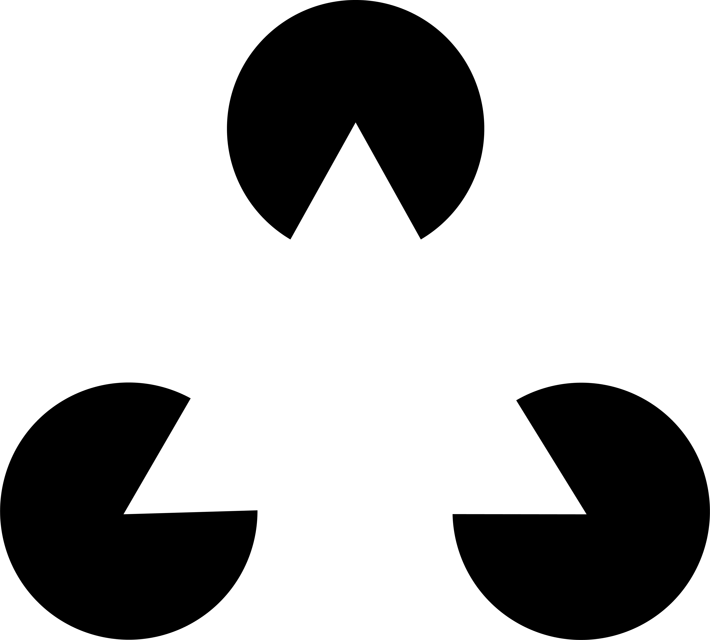

카니자 삼각형(Kanizsa Triangle)은 1955년 이탈리아의 심리학자 가에타노 카니자(Gaetano Kanizsa)가 발표한 착시 현상이다. 세 개의 팩맨 모양 도형을 삼각형의 꼭짓점 위치에 배치하면, 실제로 그려지지 않은 삼각형의 윤곽선이 또렷하게 보인다.
이렇게 실제로 존재하지 않지만 지각되는 윤곽선을 주관적 윤곽선(Subjective Contour) 또는 인지적 윤곽선이라고 한다. 뇌는 불완전한 정보를 받았을 때 빈 공간을 채워 완전한 형태를 만들어내려 한다. 이를 게슈탈트 심리학에서는 "폐합(Closure)"의 원리라고 부른다.
흥미로운 점은 카니자 삼각형의 내부가 바깥보다 약간 더 밝게 보인다는 것이다. 실제로는 동일한 흰색이지만, 뇌가 삼각형이 존재한다고 판단하면서 내부를 다르게 처리하기 때문이다. 존재하지 않는 도형이 실제 밝기 지각까지 바꿔버린다.
카니자 삼각형은 시각 피질의 작동 방식을 이해하는 데 중요한 단서를 제공했다. 뇌는 눈에서 들어오는 신호를 수동적으로 기록하는 것이 아니라, 능동적으로 세계를 구성한다. 없는 것을 만들어내는 것이 바로 그 증거다.